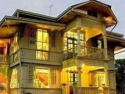
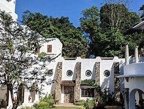
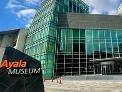

Museum

Hofilena Heritage House
The Hofilena Heritage House in Silay City is an art museum with over 1,000 artworks, once home to Manuel Hofilena and now run by his son, Ramon, who gives tours.

BenCab Museum
The BenCab Museum in Baguio City, owned by artist Benedicto Cabrera, displays contemporary Philippine art and indigenous crafts from the Cordilleras.

Pinto Art Museum
The Pinto Art Museum in Antipolo City showcases over 300 contemporary Filipino artworks, offering a relaxing experience with its beautiful architecture and a café for meals.

Ayala Museum
The Ayala Museum in Makati City displays modern art and Philippine history, including pre-colonial treasures, ceramics, and textiles, with notable donations from Roberto T. Villanueva and Mercedes Zobel.
National Museum of the Philippines
The National Museum in Manila is a free museum that displays over 1,000 artworks, including Juan Luna's famous "Spolarium," showcasing Philippine art from the 18th century to the present.
Current Events